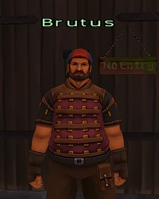
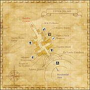

Description
Upper Jeuno is a city area in Jeuno.
Map

Involved in Quests / Missions
NPCs
| Name | Location | Type |
|---|---|---|
| Ajithaam | (G - 5) | Warp NPC |
| Antonia | (H - 8) | Standard Merchant |
| Appollonia | (G - 6) | Weather Reporter |
| Areebah | (H - 6) | Standard Merchant |
| Artush | (G - 6) | — |
| Balkehr | (H - 8) | — |
| Baudin | (G - 8) | — |
| Bheem | (F - 5) | — |
| Bozz | (G - 9) | — |
 BrutusImage source | (G - 7) | Job Quest Giver |
| Champalpieu | (H - 6) | Standard Merchant |
| Chiphraix | (H - 10) | — |
| Collet | (G - 7) | — |
| Constance | (G - 9) | — |
| Coumuna | (H - 8) | Standard Merchant |
| Couvoullie | (G - 7) | Chocobo Renter |
| Deadly Minnow | (H - 9) | Standard Merchant |
| Edlina | (I - 10) | Map Viewer |
| Emitt | (F - 5) | Conquest Overseer |
| Finbarr | (G - 7) | — |
| Finnela | (G - 7) | — |
| Galmut | (G - 7) | — |
| Garadaut | (G - 6) | — |
| Geebeh | (I - 8) | — |
| Glyke | (F - 7) | Standard Merchant |
| Guslam | (H - 8) | — |
| H.A.R.P. Envoy NPC is unique to HorizonXI | (I - 8) | — |
| Hinda | (H - 9) | — |
| Ilumida | (G - 8) | — |
| Indika | (H - 7) | Auction House Representative |
| Kasra | (H - 7) | Item Deliverer |
| Khe Chalahko | (H - 9) | Standard Merchant |
| Koriso-Manriso | (G - 9) | Item Deliverer |
| Kortso-Paratso | (H - 8) | — |
| Laila | (G - 7) | Job Quest Giver |
| Leillaine | (G - 9) | Standard Merchant |
| Luto Mewrilah | (G - 8) | — |
| Mailloquetat | (H - 9) | — |
| Mairee | (G - 7) | Chocobo Renter |
 MejuoneImage source MejuoneImage source | (G - 7) | Standard Merchant |
| Migliorozz | (H - 9) | — |
| Mojuro-Nojuro | (F - 7) | — |
 MonberauxImage source MonberauxImage source | (G - 10) | — |
| Moritz | (I - 8) | ENM Quest Time Checker |
| Nekha Shachaba | (G - 8) | — |
| Nevela | (G - 7) | — |
| Olgald | (G - 7) | — |
| Osker | (G - 7) | — |
| Palarillont | (H - 8) | — |
| Paya-Sabya | (I - 8) | — |
| Peonyroon | (G - 7) | Chocobo Skin Enthusiast |
| Polly | (H - 9) | — |
| Ratoto | (I - 10) | Adventurer's Assistant |
| Renik | (H - 9) | — |
| Rhea Myuliah | (G - 7) | — |
| Rosaline | (G - 10) | — |
| Rouliette | (H - 9) | — |
| Rusese | (H - 6) | Map Dealer |
| Shalott | (G - 7) | — |
| Shama Pikholo | (G - 9) | Auction House Representative |
| Shiroro | (G - 8) | — |
| Sibila-Mobla | (G - 7) | — |
| Silver Tail | (G - 7) | — |
| Souren | (G - 9) | — |
| Sprinkstix NPC is unique to HorizonXI | (G - 8) | Outpost Teleporter |
| Taylen | (H - 8) | — |
| Tewo Rutuminpa | (G - 7) | — |
| Tinjue | (G - 6) | Past Event Watcher |
| Ulesa | (H - 7) | Auction House Representative |
| Wise Wolf | (G - 9) | Auction House Representative |
| Zekobi-Morokobi | (J - 11) | — |
| Zelma | (H - 8) | — |
| Zuber | (F - 7) | — |

NPCs and services
| NPC | In-game map | Service |
|---|---|---|
| Zenith Outpost | F-5 · Home Point #1 | Outpost travel; gil or CP |
| Zenith Guide | F-5 · Home Point #1 | Gate Crystal travel |
| Brutus | G-7 · Chocobo stables | Chocobo’s Wounds; Chocobo License |
| Mairee or Couvoullie | G-7 · Chocobo stables | Chocobo rental |
| Mejuone | G-7 · Chocobo stables | Stable shop |
| Monberaux | G-10 · Infirmary | The Doctor’s Oath |
Getting around
Home Point #1 is near the Batallia Downs gate. For a chocobo, visit the stables at (G-7). Chocobo rental guide.
World Quests v3.3.0. Install the update and restart the server to use the Jeuno services.
Story walkthroughs in this area
| Story | Mission / quest |
|---|---|
| CoP 1-1 | The Rites of Life |
| CoP 3-5 | Darkness Named |
| CoP 5-3T | The Pursuit of Paradise — Tenzen’s Path |
| CoP 6-1 | For Whom the Verse is Sung |
| CoP 7-2 | Flames in the Darkness |
| CoP 8-4 | Dawn |
| WotG 41-2 | Her Memories: Of Malign Maladies |
| WotG 4 | The Queen of the Dance |
| AMK 3 | Hasten! In a Jam in Jeuno? |
| AMK 4 | Welcome! To My Decrepit Domicile |
| AMK 6 | An Errand! The Professor's Price |
| AMK 7 | Shock! Arrant Abuse of Authority |
| AMK 8 | Lender Beware! Read the Fine Print |
| AMK 10 | Roar! A Cat Burglar Bares Her Fangs |
| AMK 11 | Relief! A Triumphant Return |
References
External references describe their own server or retail rules. Documented Zenith changes take precedence.
Map credits: Map 1 — HorizonXI Wiki. Original game maps © SQUARE ENIX; redrawn maps retain the credited authorship and license.

Additional level-75 reference


|
The upper level of Jeuno, also known as the Artisan Bridge, is home to a few shops and merchants. The dichotomy of the district is readily apparant as the Temple of the Goddess and infirmary lie a few steps from weapon and shield shops, and a block away from the Marble Bridge Tavern. The Auction House is accessible from this district as well, and chocobos can be rented to access to Batallia Downs. Obtaining the Upper Jeuno mapConnecting Areas
|
Quests Started Here
NPCs Found Here
|
|
Adapted from Eden Wiki: Upper Jeuno · Contributors and history · CC BY-SA 4.0. Revision 45569. Layout, links and optional background text adapted for Zenith.